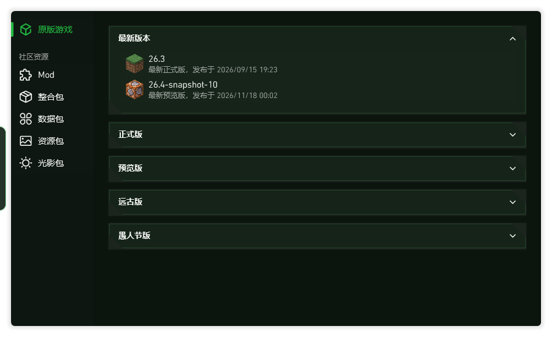
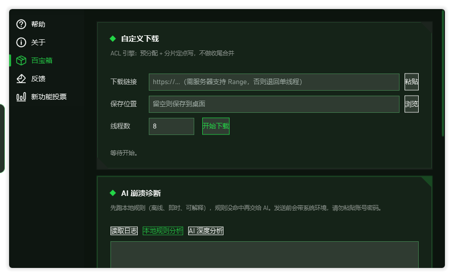
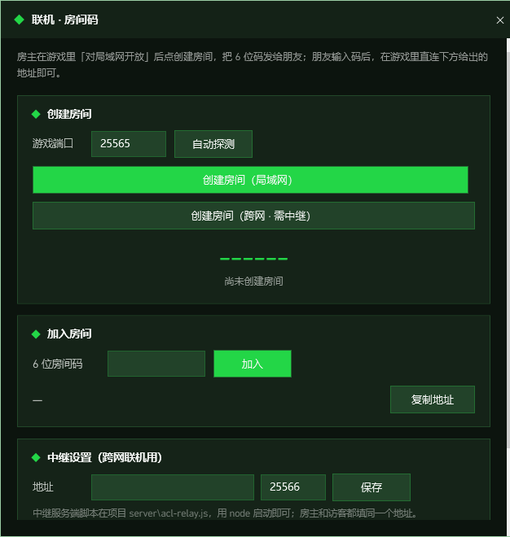
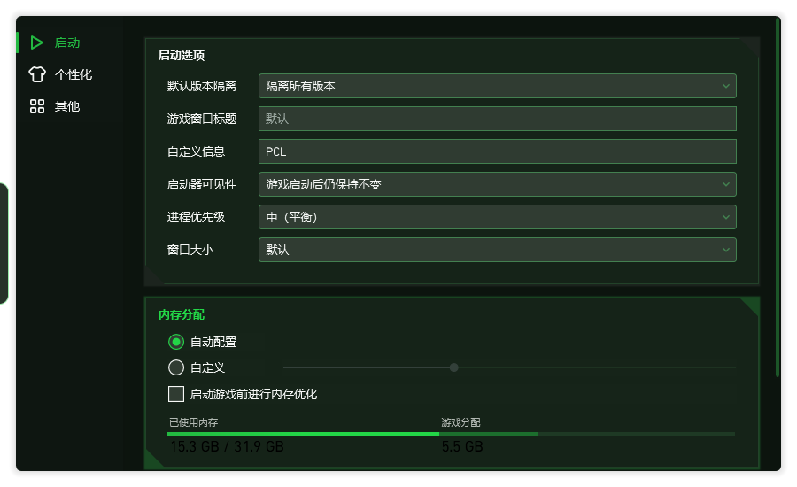

全量版本下载
正式版、预览版（快照）、远古版、愚人节版都能下载，社区资源覆盖 Mod、整合包、数据包、资源包、光影包。
v0.8.0 · 2026-11-24 更新
ACL 启动器是一个 Windows 端的 Minecraft 启动器。全量版本下载、Mod 与整合包安装、 崩溃后自动分析原因、6 位房间码联机——都在一个 5.4 MB 的单文件里，双击就能跑。

不是又一个套壳前端，下载、诊断、联机三条链路都是自己实现的。
正式版、预览版（快照）、远古版、愚人节版都能下载，社区资源覆盖 Mod、整合包、数据包、资源包、光影包。
先跑本地规则库，命中即给出结论与修复步骤；规则没命中时再交给大模型分析，不需要联网也能得到大部分答案。
房主开好局域网世界，得到一个 6 位码；朋友输入码即可加入。同网段走 UDP 广播直连，跨网走中继配对。
预分配文件 + 分片定点写入，不做收尾合并；分片级重试、实时速度与进度。155 MB / 4.07 s（约 38 MB/s）。
鼠标贴到窗口左边缘滑出工具坞，九宫格展开右半圆轮盘切换页面；整窗任意空白处都能拖动，控件照常响应。
全部依赖内嵌在一个 exe 里，配置与日志写在程序目录的 ACL 文件夹，卸载就是删掉文件夹。
深墨绿底 + 低饱和强调色，长时间盯着不刺眼。



不需要安装，不需要配置环境。
下载 exe，放到一个你想长期保留的文件夹（比如 D:\Games\ACL）。
首次启动会在同目录生成 ACL 与 .minecraft 文件夹，稍等它扫描环境。
进入「下载」，选一个正式版，装好 Forge / Fabric / OptiFine 后回「启动」选版本即可。
当前版本 v0.8.0，发布于 2026-11-24。
Windows 10 / 11 · 需要 .NET Framework 4.8 · 免安装
Android 8.0+ · Kotlin + Jetpack Compose · APK 直接安装
关于转载与发布：本项目基于 Plain Craft Launcher 的源码修改，受其《PCL 分发有限许可》约束。 公开发布衍生版本前，需按该许可调整名称、界面主色、署名并公开源代码。请以仓库说明为准。
先看这里，能省一轮排查。
启动器自带 Java 检测，会自动扫描本机已安装的 Java。如果没有，可以在设置里指定 Java 路径，或先安装 Java 8 / 17 / 21 中的任意一个。
ACL 启动器基于 .NET Framework 4.8。Windows 10 1809 以及 Windows 11 已内置；更早的系统需要手动安装 .NET Framework 4.8 运行时。
同一局域网内不需要，直接用 6 位房间码即可互联。
跨网络联机需要一台有公网 IP 的机器运行中继脚本 server/acl-relay.js，房主与访客填写同一个中继地址。
免费。项目基于 Plain Craft Launcher 的源码修改，遵循原项目随附的《PCL 分发有限许可》，不收取任何费用。
目前只提供 Windows 版本，依赖 WPF 与 .NET Framework，暂不支持其他平台。
配置、日志、皮肤都在程序目录的 ACL 文件夹，游戏与存档在 .minecraft 文件夹。整个文件夹搬走即可迁移，删除 exe 不会影响它们。